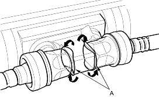
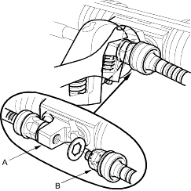
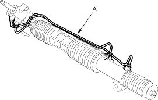

- Cylinder end seal remover attachment, 07NAD-SR30200
- Driver, 27 mm, 07ZAF-S5A0100
- Valve seal ring sizing tool, 07NAG-SR30900
- Sleeve seal ring guide, 07YAG-S2X0100
- Sleeve seal ring sizing tool, 07ZAG-SA50100
- Attachment, 32 x 35 mm, 07746-0010100
- Driver, 07749-0010000
- Piston seal ring guide, 07GAG-SD40100
- Piston seal ring sizing tool, 07GAG-SD40200
- Pincers, Oetiker 1098 or equivalent, commercially available.
- Pilot collar, 07GAF-PH70100
- Locknut wrench, 07ZAA-S5A0100
- Driver handle, 07NAD-SR30101
- Seal slider, 07974-6890801
- Valve seal ring guide, 07ZAG-S5A0200
NOTE: Refer to the Exploded View as needed during this procedure.
Removal
- Remove the steering gearbox (see page 17-35).
Disassembly
- Unbend the lock washer (A).

- Hold the bracket (A) with one wrench, and unscrew both rack ends (B) with another wrench. Remove the lock washers.

- Remove cylinder lines (A) from the gearbox.

- Drain the fluid from the cylinder fittings by slowly moving the steering rack back and forth.